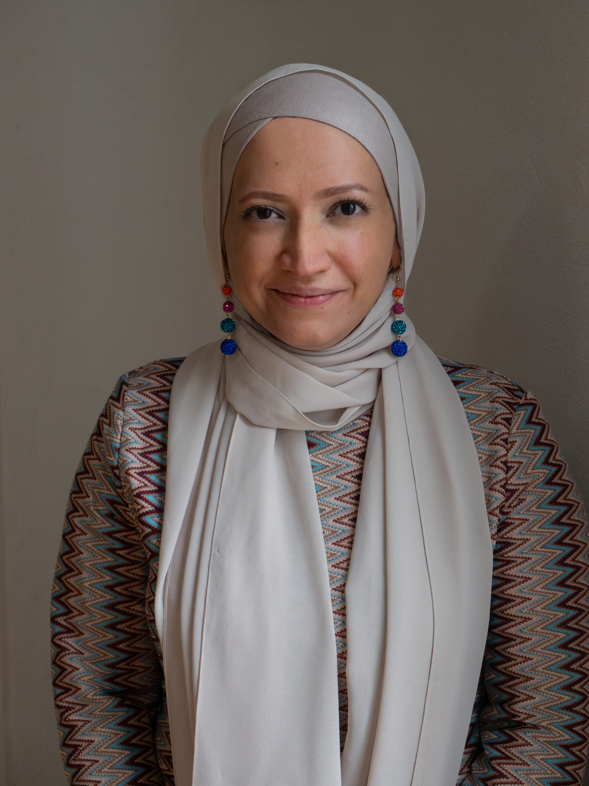

Shazma Gaffoor

See her workLook both ways
A panel talk show that looks at everyday issues through an unapologetically intersectional lens. Two hosts who grew up in different worlds sit down with people whose stories don't usually get on television.

A panel talk show that looks at everyday issues through an unapologetically intersectional lens. Two hosts who grew up in different worlds sit down with people whose stories don't usually get on television, and pull complicated subjects apart with humour rather than jargon. Jess and Shaz have very different backgrounds and upbringings, and a strong friendship built on deep conversations about big ideas.
The pilot is a periods episode where the two hosts, a hijabi journalist and a bogan weirdo, a trans non-binary health promotion officer and a culturally aware period educator all talk about their own periods on free-to-air television.
Made by three Melbourne women, for community television, streaming, and social.
A kind and tolerant society that shares compassion with people from all walks of life.
To create community television that reaches the hearts and minds of everyday people, breaks down ignorance, and fosters everyday kindness.
Guest suggestions, story ideas, crewing, or anything else. You can also email us at the.intersection.show.australia@gmail.com.
Thanks. We'll get back to you.